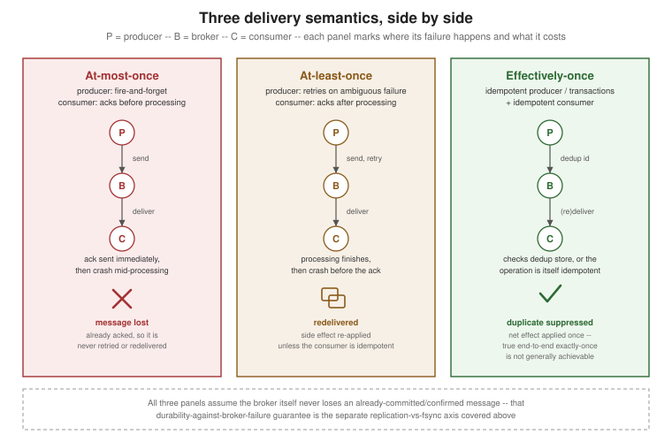

Delivery Guarantees
|
This content was generated with the assistance of AI and should be verified against the official documentation before being relied on in production. |
"Delivery guarantees" is really a claim about one thing: what happens to a single message when something fails partway through — a producer’s connection drops mid-send, a broker node restarts, a consumer crashes after reading a message but before finishing with it. Every broker has to pick a behavior for each of those failure points, on the producer side and on the consumer side independently, and the combination of the two choices is what a team actually experiences as "at-most-once", "at-least-once", or "exactly-once" delivery. This page works through all three, then the two durability mechanisms (replication and fsync) that decide what an acknowledgement is actually worth in Kafka versus RabbitMQ, and closes with a table of the concrete configuration knob each guarantee maps to on each broker.
At-most-once, at-least-once, and effectively-once
The producer side: fire-and-forget vs. retry-on-ambiguous-failure
A producer’s send can fail in two distinguishable ways and one ambiguous way. A definite failure — the broker rejects the write outright — is easy: the producer knows nothing was stored and can safely retry. The ambiguous case is the one that matters: the network connection times out or drops after the broker has durably stored the message but before its acknowledgement reaches the producer. From the producer’s point of view this is indistinguishable from "the write never happened", so there are only two honest choices:
-
Fire-and-forget. Send once, do not wait for an acknowledgement, do not retry on timeout. Whatever was in flight when the connection dropped is gone for good — this is the producer half of at-most-once.
-
Retry on ambiguous failure. Treat "I don’t know whether that landed" as "assume it didn’t, and resend." This never loses a message the producer genuinely cares about, but it can create a second, duplicate copy of a message that in fact did land the first time — this is the producer half of at-least-once, and the reason duplicates exist at all in a reliable system.
The consumer side: ack-before vs. ack-after processing
The same fork exists on the consumer side, around when the consumer tells the broker "I’m done with this message" relative to when it actually finishes acting on it:
-
Acknowledge before processing. The consumer marks the message as handled (commits the offset, sends the ack) as soon as it receives it, then runs its business logic. If the consumer crashes mid-logic, the broker already believes the message was delivered successfully and will never redeliver it — the message, and whatever the consumer was about to do with it, is lost. This is the consumer half of at-most-once.
-
Acknowledge after processing. The consumer only marks the message as handled once its business logic has fully completed. If the consumer crashes after finishing the work but before the acknowledgement reaches the broker, the broker still considers the message undelivered and redelivers it once the consumer reconnects — even though the work was, in fact, already done once. This is the consumer half of at-least-once, and the other source of duplicates in the system.
Kafka’s manual-commit consumer is the textbook instance of "acknowledge after processing":
package com.example.orders;
import java.time.Duration;
import java.util.Collections;
import java.util.Properties;
import org.apache.kafka.clients.consumer.ConsumerConfig;
import org.apache.kafka.clients.consumer.ConsumerRecords;
import org.apache.kafka.clients.consumer.KafkaConsumer;
import org.apache.kafka.common.serialization.StringDeserializer;
public class OrderConsumer {
public static void main(String[] args) {
Properties props = new Properties();
props.put(ConsumerConfig.BOOTSTRAP_SERVERS_CONFIG, "localhost:9092");
props.put(ConsumerConfig.GROUP_ID_CONFIG, "order-processors");
props.put(ConsumerConfig.KEY_DESERIALIZER_CLASS_CONFIG, StringDeserializer.class.getName());
props.put(ConsumerConfig.VALUE_DESERIALIZER_CLASS_CONFIG, StringDeserializer.class.getName());
// disable auto-commit so the offset is only committed once processing has actually finished
props.put(ConsumerConfig.ENABLE_AUTO_COMMIT_CONFIG, false);
try (KafkaConsumer<String, String> consumer = new KafkaConsumer<>(props)) {
consumer.subscribe(Collections.singletonList("orders"));
while (true) {
ConsumerRecords<String, String> records = consumer.poll(Duration.ofMillis(500));
records.forEach(OrderConsumer::process); // business logic runs first
consumer.commitSync(); // offset only advances after processing succeeds -- at-least-once
}
}
}
private static void process(org.apache.kafka.clients.consumer.ConsumerRecord<String, String> record) {
// apply the order; a crash here, before commitSync() runs, causes a redelivery of this same record
}
}This is the "Manual Offset Control" pattern documented directly on the KafkaConsumer class; see
Apache Kafka Javadoc — KafkaConsumer, "Manual Offset Control" for the full option set (commitSync vs. commitAsync, per-partition
commits, and rebalance listeners).
Effectively-once, the more honest name
"Exactly-once" is the semantic everyone wants and almost nobody’s system actually provides end to end. True exactly-once delivery to an external side effect — write this database row, call this payment API, send this notification — exactly once, across two independent systems that can each fail and restart at any moment, is not generally achievable: nothing forces the message broker’s decision ("delivered") and the external system’s decision ("applied") to be atomic with each other. What is achievable, and what most "exactly-once" discussions actually mean once the marketing is stripped away, is effectively-once: at-least-once delivery (never losing a message) combined with duplicate suppression, so that the net, observable effect looks as if each message were processed exactly once, even though duplicates were delivered and quietly discarded along the way. That suppression can happen on the producer side (an idempotent producer that never lets its own retries create a second copy at the broker) or on the consumer side (an idempotent consumer that recognizes and ignores a message it has already applied) — both are covered below.
Kafka gets closer than most brokers to a genuine internal exactly-once, but only for a closed
consume-transform-produce loop entirely inside Kafka itself — reading from one topic, transforming, and
writing to another, using the transactional producer plus read_committed consumers described in the
comparison table further down. The moment that loop’s output touches anything outside Kafka — a database, an
HTTP call, a different message broker — the guarantee reverts to effectively-once, and the responsibility for
deduplication moves back into application code as an idempotent consumer.
Acknowledgements and redelivery, generically
Underneath broker-specific terminology, every messaging system implements the same three moves: a positive
acknowledgement tells the broker a message was handled and can be forgotten; a negative acknowledgement (a
reject or a nack) tells it the message failed and should be requeued or routed to a dead-letter destination;
and no acknowledgement at all within some timeout or session window is treated the same as an explicit
failure, because the broker has no other way to learn that the consumer died silently. Kafka and RabbitMQ
instantiate this shape quite differently in practice: Kafka’s "acknowledgement" is really a position — the
committed offset for a consumer group on a given partition — so there is no first-class way to nack a single
record; what advances or fails to advance is the whole read position past it. RabbitMQ’s acknowledgement is a
genuine per-message operation, addressed by a delivery tag, with basic.ack, basic.nack, and basic.reject
as distinct outcomes for that one message.
The figure below shows the consumer-side failure mode from the at-least-once discussion above concretely: the consumer finishes its work, then crashes before its acknowledgement reaches the broker, so the message is redelivered even though it was already fully processed once.
This is exactly why idempotent consumers matter: the broker behaved correctly by every at-least-once rule it is supposed to follow, and the message was still processed twice.
Duplicates and idempotent consumers
Because both the producer-side retry and the consumer-side redelivery paths above can independently create a duplicate, an application that needs effectively-once outcomes — not just effectively-once delivery — generally has to make its own processing idempotent. Two patterns cover almost every case:
-
Deduplicate by message/event id. Every message carries an application-assigned identifier (an event id, an idempotency key, a business key such as an order id). Before applying a message’s effect, the consumer checks whether that id has already been recorded as processed — typically an upsert into a dedup table or cache guarded by a unique constraint — and skips the side effect if it has. This works for any operation, including ones that are not naturally idempotent.
-
Rely on the operation’s natural idempotency. Some operations are idempotent by construction and need no dedup store at all: an
UPSERTkeyed by a stable business id, "set the balance to $100" rather than "add $10 to the balance", aPUTrather than a non-idempotentPOST. Where the domain allows it, this is simpler and cheaper than an explicit dedup table.
Ordering guarantees
Ordering is a separate axis from delivery semantics, and both brokers scope it the same way: within one unit of parallelism only, never across several.
-
Kafka guarantees ordering only within a single partition — records with the same key always land on, and are read back from, the same partition, in the order they were sent. There is no ordering guarantee across the partitions of a topic: two records with different keys (or no key) can be read back in either order relative to each other, even if they were sent in a specific sequence.
-
RabbitMQ preserves, for a single queue, the order in which messages were published to it — delivery to that queue’s consumers follows publish order, roughly: a message that is nacked and requeued can be redelivered after messages that were originally published later than it, and several competing consumers on the same queue will finish processing in whatever order their individual work completes, which is not necessarily delivery order.
Neither broker makes any ordering promise across independent partitions, queues, or topics — ordering is always local to the one partition or queue a message was routed to, never global to the topic or exchange it came from.
Durability: replication vs. fsync
"The broker acknowledged it" sounds like one guarantee, but it rests on two genuinely different mechanisms that a broker can combine in different proportions: replication (the message exists as more than one copy, on more than one broker node) and fsync (a specific write has been forced out of the operating system’s page cache and onto physical disk before the broker returns). A broker can replicate without fsyncing, fsync without replicating, or do both — and Kafka and RabbitMQ’s flagship durability settings land on different points of that space, which is why "acknowledged" means something subtly but importantly different between them.
Kafka’s acks=all: replicated to the ISR, not necessarily fsynced
A Kafka record is committed once every broker in that partition’s current in-sync replica set (ISR) has
applied it to its own log. acks=all (formerly written acks=-1) makes the producer wait for exactly that: the
partition leader appends the record and every ISR member replicates it before the producer receives its
acknowledgement. What "applied to its log" does not automatically mean is "fsynced to physical disk on every
one of those brokers": Kafka’s default operation writes to the operating system’s page cache and lets the OS
flush dirty pages to disk in the background, deriving its durability guarantee from replication across the ISR
rather than from a synchronous disk flush on every write (log.flush.interval.messages / log.flush.interval.ms
exist to force more frequent flushing, but Kafka’s own operational guidance is to leave flushing to the OS and
rely on replication instead). The practical upshot: an acks=all write survives the loss of any brokers short of
the entire ISR at once, because the data exists in memory (and typically, shortly after, on disk) on several
independent machines — not because each of those machines individually forced it onto a physical platter the
instant it was acknowledged.
package com.example.orders;
import java.util.Properties;
import org.apache.kafka.clients.producer.KafkaProducer;
import org.apache.kafka.clients.producer.ProducerConfig;
import org.apache.kafka.clients.producer.ProducerRecord;
import org.apache.kafka.common.serialization.StringSerializer;
public class DurableOrderProducer {
public static void main(String[] args) {
Properties props = new Properties();
props.put(ProducerConfig.BOOTSTRAP_SERVERS_CONFIG, "localhost:9092");
props.put(ProducerConfig.KEY_SERIALIZER_CLASS_CONFIG, StringSerializer.class.getName());
props.put(ProducerConfig.VALUE_SERIALIZER_CLASS_CONFIG, StringSerializer.class.getName());
props.put(ProducerConfig.ACKS_CONFIG, "all"); // wait for every in-sync replica
props.put(ProducerConfig.ENABLE_IDEMPOTENCE_CONFIG, true); // default true since Kafka 3.0
try (KafkaProducer<String, String> producer = new KafkaProducer<>(props)) {
producer.send(new ProducerRecord<>("orders", "order-42", "{\"status\":\"created\"}"),
(metadata, exception) -> {
if (exception != null) {
// a genuinely failed send after all retries are exhausted; the ambiguous-timeout
// case is already handled internally by the idempotent producer's retries
}
});
}
}
}acks and enable.idempotence are documented in the generated producer configuration reference; see
Apache Kafka — Producer Configuration Reference.
RabbitMQ’s quorum-queue publisher confirms: replicated and fsynced by a Raft majority
RabbitMQ’s quorum queue type replicates its data using the Raft consensus algorithm, and it is built around
persisting to disk before anything else — a quorum queue writes every entry to its Raft log on disk as part of
reaching consensus on it. A publisher confirm for a message published to a quorum queue is issued only once that
message has been replicated to, and written and flushed (fsynced) by, a Raft majority of that queue’s members — not merely accepted by the leader, and not merely held in memory anywhere. That makes a RabbitMQ quorum-queue
confirm a strictly stronger disk-durability signal than a Kafka acks=all acknowledgement: where Kafka’s commit
means "replicated to every ISR member, page-cached and eventually flushed by the OS", RabbitMQ’s quorum-queue
confirm means "replicated to, and fsynced by, a majority of replicas, synchronously, before the confirm is
sent".
package com.example.orders;
import java.util.concurrent.TimeoutException;
import com.rabbitmq.client.Channel;
import com.rabbitmq.client.Connection;
import com.rabbitmq.client.ConnectionFactory;
import java.io.IOException;
import java.nio.charset.StandardCharsets;
import java.util.HashMap;
import java.util.Map;
import java.util.concurrent.TimeUnit;
public class DurableOrderPublisher {
public static void main(String[] args) throws IOException, TimeoutException, InterruptedException {
ConnectionFactory factory = new ConnectionFactory();
factory.setHost("localhost");
try (Connection connection = factory.newConnection();
Channel channel = connection.createChannel()) {
Map<String, Object> args1 = new HashMap<>();
args1.put("x-queue-type", "quorum"); // Raft-replicated queue, not a classic queue
channel.queueDeclare("orders", true, false, false, args1);
channel.confirmSelect(); // switch the channel into publisher-confirm mode
channel.basicPublish("", "orders", null,
"{\"status\":\"created\"}".getBytes(StandardCharsets.UTF_8));
// waits until the quorum queue's Raft majority has replicated and fsynced the message
boolean confirmed = channel.waitForConfirms(TimeUnit.SECONDS.toMillis(5));
if (!confirmed) {
// not yet safe: retry or escalate, the same ambiguous-failure handling as a Kafka producer
}
}
}
}This is the pattern from the publisher-confirms tutorial; see RabbitMQ Tutorials — Publisher Confirms (Java) and RabbitMQ Documentation — Publisher Confirms and Consumer Acknowledgements.
Quorum queues did not always exist: before RabbitMQ 4.0, highly available queues were provided by classic mirrored queues, a policy-based primary/mirror replication scheme layered on top of the classic queue type. Classic queue mirroring is a historical construct now — it was removed entirely in RabbitMQ 4.0, and quorum queues are its complete replacement for any workload that needs replicated, highly available queues. Classic (non-mirrored) queues still exist and remain the lowest-overhead option for a single-node, non-critical queue, but they carry neither the Raft replication nor the fsync-backed confirm guarantee described above.
Why "acknowledged" means something different
Put side by side, the contrast is the single most common point of confusion between the two brokers: Kafka’s
acks=all is fundamentally a replication guarantee that happens to rely on the OS to eventually persist data
to disk, while RabbitMQ’s quorum-queue confirm is a combined replication-and-fsync guarantee, with the disk
flush built into what "confirmed" means. Neither is strictly "more correct" — Kafka’s choice trades a slightly
weaker single-write durability guarantee for materially higher throughput, which is consistent with its design
as a high-throughput log; RabbitMQ’s quorum queues trade some of that throughput for a stronger, synchronous
per-write durability guarantee, consistent with its design as a message broker for workloads where an individual
message’s fate matters more than aggregate log throughput.
Comparing how each semantic is configured
| Semantic / concern | Kafka | RabbitMQ |
|---|---|---|
Producer acknowledgement |
|
Publisher confirms: |
Duplicate suppression on producer retry |
|
No broker-wide equivalent on queues; deduplication is left to an idempotent consumer, or, specifically on RabbitMQ Streams, publishing-ID-based deduplication (see below). |
Atomic multi-destination writes |
Transactional producer ( |
No cross-queue equivalent. AMQP 0-9-1’s own per-channel |
Read-side visibility of uncommitted writes |
|
No equivalent concept — a RabbitMQ consumer only ever sees a message once it has actually been routed to its queue; there is no separate "uncommitted" visibility state to opt out of. |
Consumer acknowledgement |
Offset commit — automatic ( |
Manual acknowledgement ( |
Broker-side replication for durability |
Replication to the partition’s ISR, driven by |
Quorum queues ( |
Stream-level producer deduplication |
Covered by the idempotent producer above — no separate mechanism. |
RabbitMQ Streams only: a named |
RabbitMQ’s manual-acknowledgement consumer is the same "ack after processing" shape as the Kafka manual-commit consumer shown earlier, addressed per message rather than as a group-wide offset:
package com.example.orders;
import java.io.IOException;
import java.nio.charset.StandardCharsets;
import java.util.concurrent.TimeoutException;
import com.rabbitmq.client.CancelCallback;
import com.rabbitmq.client.Channel;
import com.rabbitmq.client.Connection;
import com.rabbitmq.client.ConnectionFactory;
import com.rabbitmq.client.DeliverCallback;
public class OrderConsumer {
public static void main(String[] args) throws IOException, TimeoutException {
ConnectionFactory factory = new ConnectionFactory();
factory.setHost("localhost");
Connection connection = factory.newConnection();
Channel channel = connection.createChannel();
channel.basicQos(1); // one unacknowledged message in flight per consumer
DeliverCallback deliverCallback = (consumerTag, delivery) -> {
String body = new String(delivery.getBody(), StandardCharsets.UTF_8);
try {
process(body); // business logic runs first
channel.basicAck(delivery.getEnvelope().getDeliveryTag(), false); // ack only after it succeeds
} catch (RuntimeException e) {
// requeue=true redelivers; a crash here, before basicAck, also causes a redelivery
channel.basicNack(delivery.getEnvelope().getDeliveryTag(), false, true);
}
};
CancelCallback cancelCallback = consumerTag -> { };
// autoAck=false: this is manual acknowledgement, not the unsafe auto-ack mode
channel.basicConsume("orders", false, deliverCallback, cancelCallback);
}
private static void process(String body) {
// apply the order; a crash here, before basicAck() runs, causes a redelivery of this same message
}
}This is the manual-acknowledgement pattern from RabbitMQ’s own consumer guide; see
RabbitMQ Documentation — Consumers,
Acknowledgement Modes and RabbitMQ Documentation — Publisher Confirms
and Consumer Acknowledgements for basicAck/basicNack/basicReject and requeue semantics.
The [mermaid] figure earlier on this page and the panel below give the same three semantics a visual, rather
than tabular, summary: where each one accepts the risk of loss, where it accepts the risk of duplication, and
what has to happen on top of plain delivery to get to effectively-once.
